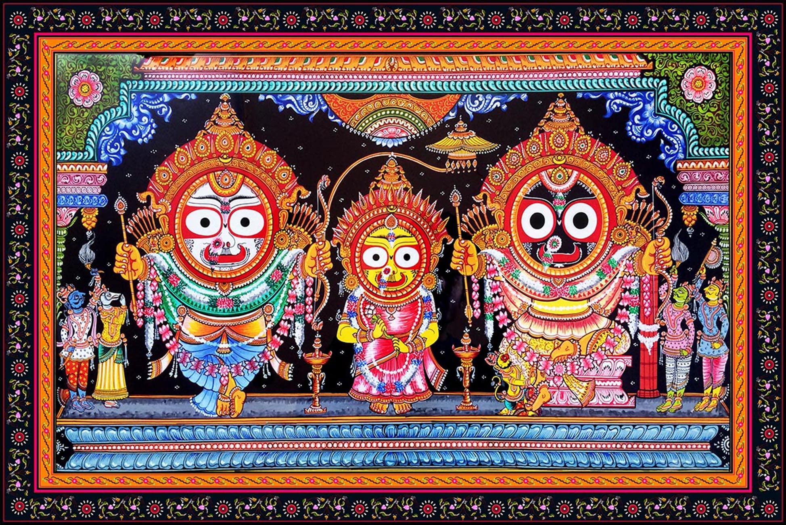

Odissi Dance
Classical dance form originating from Odisha, performed in temples and cultural venues.
Immerse yourself in Puri's rich cultural heritage, where ancient art forms, devotional practices, and community traditions create a vibrant tapestry of life.
Classical dance form originating from Odisha, performed in temples and cultural venues.
Traditional cloth-based scroll painting depicting mythological narratives and folk tales.
Sankirtan and bhajan traditions that accompany daily temple rituals and festivals.
Rich calendar of festivals celebrating Rath Yatra, Chandan Yatra, and Snana Yatra.
Traditional scroll paintings on cloth depicting stories from Hindu epics, especially focused on Lord Jagannath. These intricate artworks use natural colors and are created by skilled artisans who pass down techniques through generations.
Colorful fabric art from nearby Pipili, featuring intricate cut-work designs used in temple decorations, umbrellas, and ceremonial items for festivals.

World's largest chariot festival with millions of participants
Significance: Journey of Lord Jagannath to Gundicha Temple
21-day festival with boat processions and sandalwood paste rituals
Significance: Cooling ceremony for the deities during summer
Grand bathing ceremony of the deities visible to all devotees
Significance: Purification ritual before Rath Yatra
Sacred ceremony of renewing the wooden idols of the deities
Significance: Spiritual rebirth of the divine forms
Puri's culture is not just preserved in museums but lives in the daily routines of its people. From morning temple rituals to evening cultural programs, from traditional cooking methods to age-old craft techniques, every aspect of life carries forward centuries of heritage.
Temple ceremonies 6 times daily
Year-round festivals & performances
Generations preserving traditions